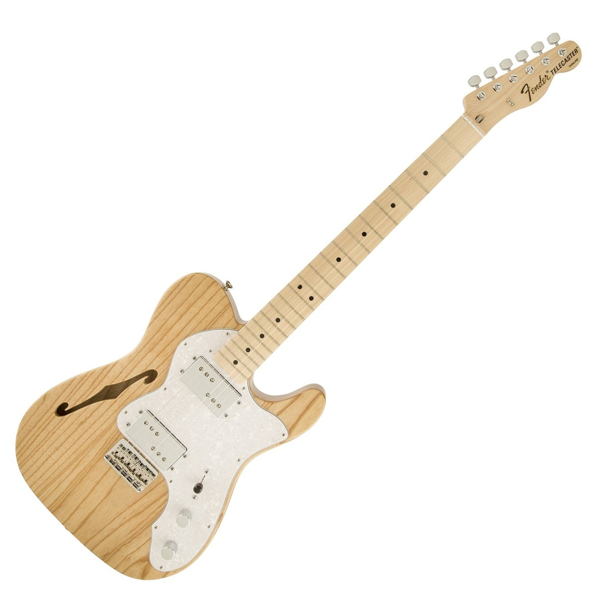
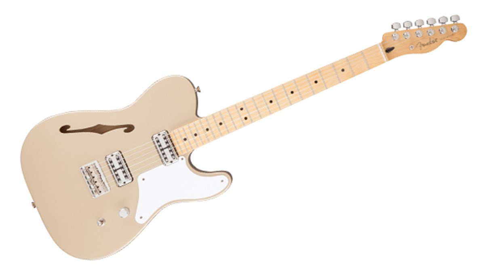

To Tele or Not Tele

The Telecaster, also known as the "Tele", was the first mass-produced solid-body electric guitar, introduced by Leo Fender in the early 1950s. Its simplicity and versatility has made it a classic that is still widely used today. It can be found in all sorts of music including country, rock, pop, blues, jazz, soul, and funk. Its simple design makes it easy to repair and replace its parts and can be easily modified to fit anyone's needs.
When choosing a Telecaster, there are plenty of options available. There is the classic Tele neck and bridge pickup setup (seen at the top), semi-hollow "thinline" Telecasters with f-holes and humbucker pickups (seen on right), "Cabronita" Teles with "TV Jones" style pickups (seen on left), and countless other options. Whatever style of music that you play, there is a Telecaster that will suit your needs.
Check out Guitar Center's selection of Telecasters!